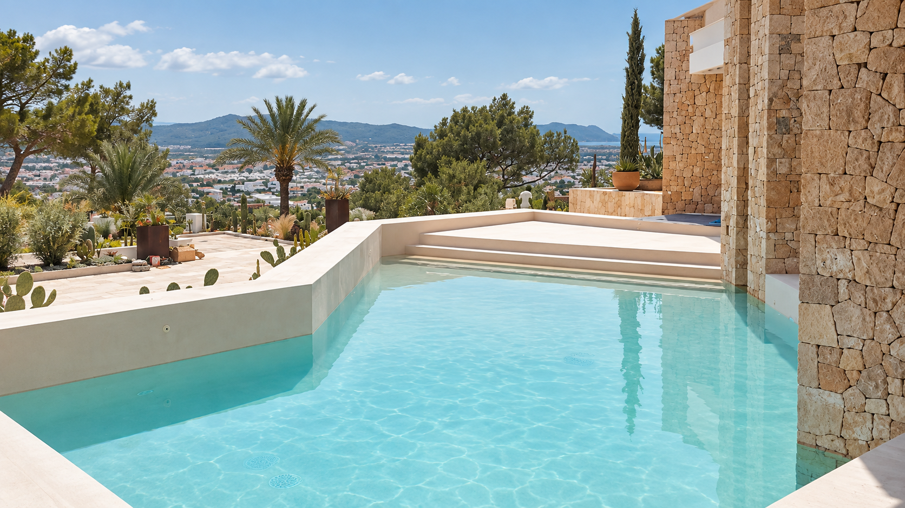
IBIZA · BALEARIC ISLANDS
Räume aus einem
Guss.
Fugenlose Oberflächen, individuelle Innenausbauten und Poolbeschichtungen – präzise ausgeführt für Häuser mit Charakter.
UNSERE PHILOSOPHIE
Material, Licht und Form in stiller Balance.
Wir gestalten Räume, die selbstverständlich wirken. Mit mineralischen Materialien, klaren Linien und einem sicheren Gefühl für die Architektur Ibizas.
01
SURFACES
Microcemento
Fugenlose Flächen für Wohnräume, Küchen und individuelle Einbauten. Zurückhaltend im Ausdruck, präzise im Detail.
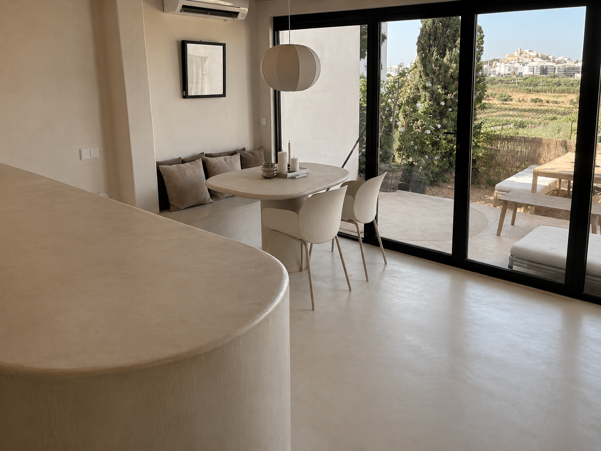
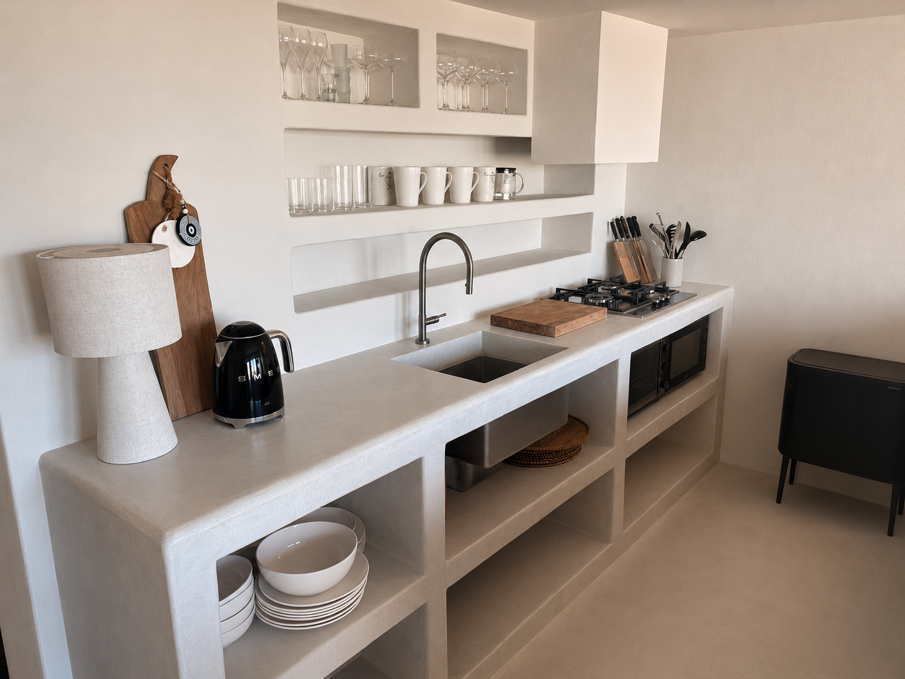
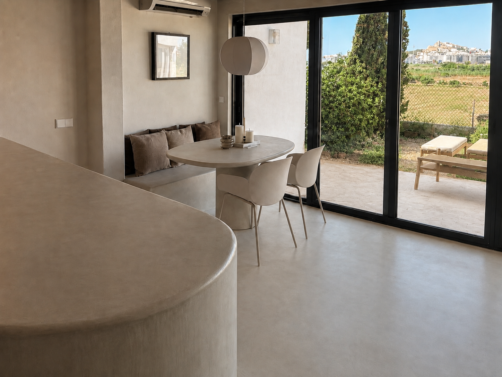
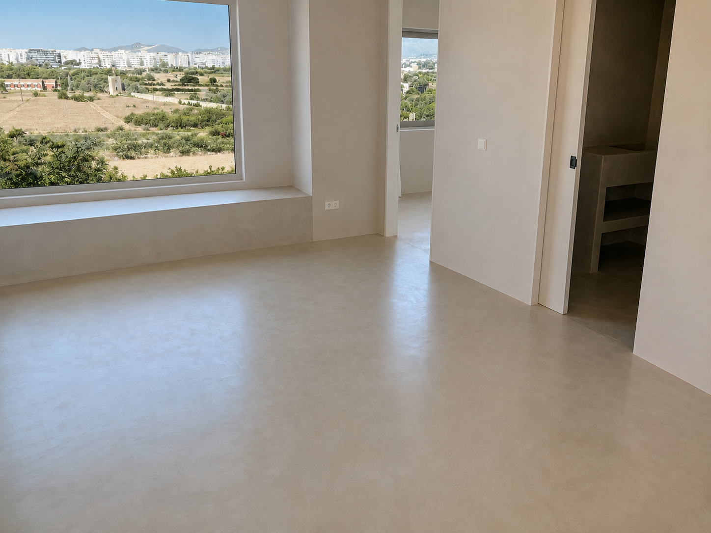
02
MINERAL FINISH
Mortex
Mineralische Oberflächen mit Tiefe und Charakter. Für Bäder, Treppen und architektonische Einzelstücke.
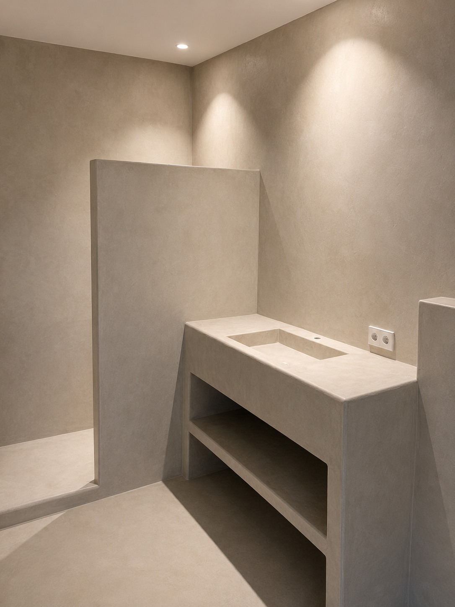
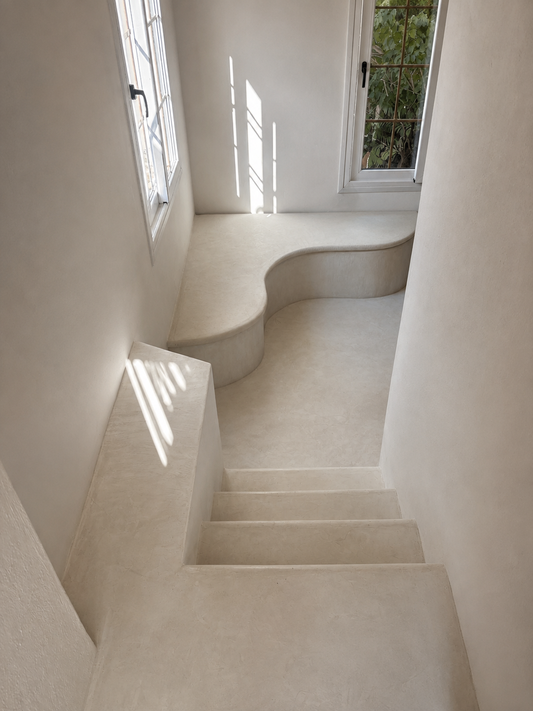
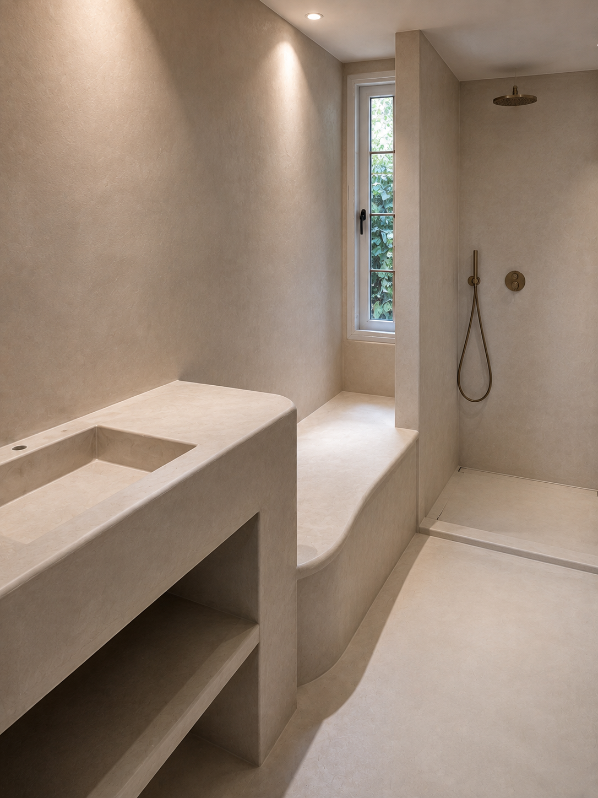
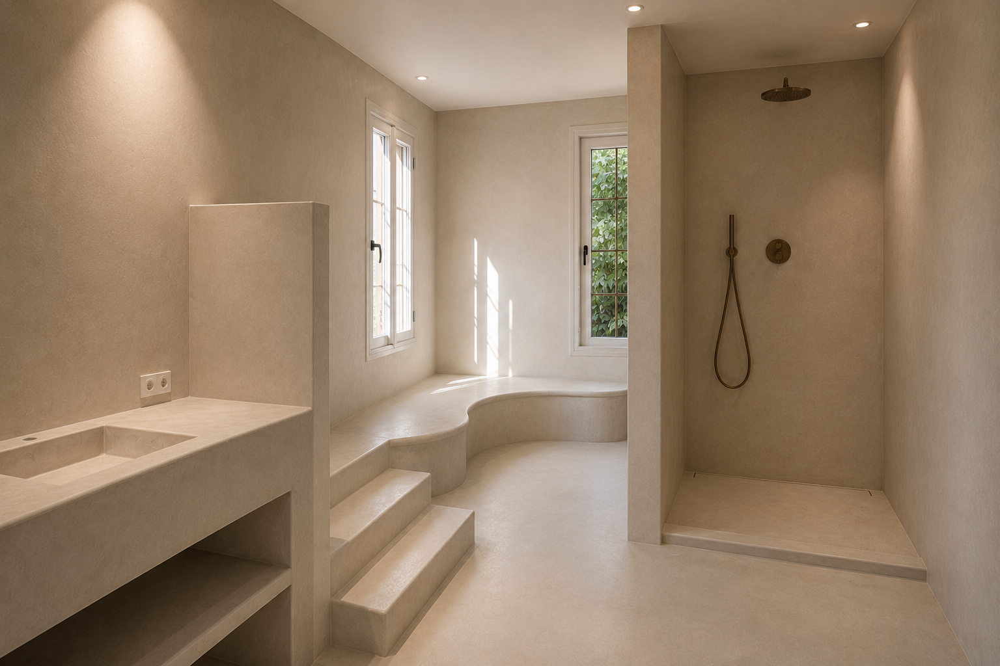
03
POOL SURFACES
Pools mit Charakter und Tiefe.
Concreseal ermöglicht eine durchgängige, fugenlose Pooloberfläche mit weicher Haptik und mineralischem Charakter.
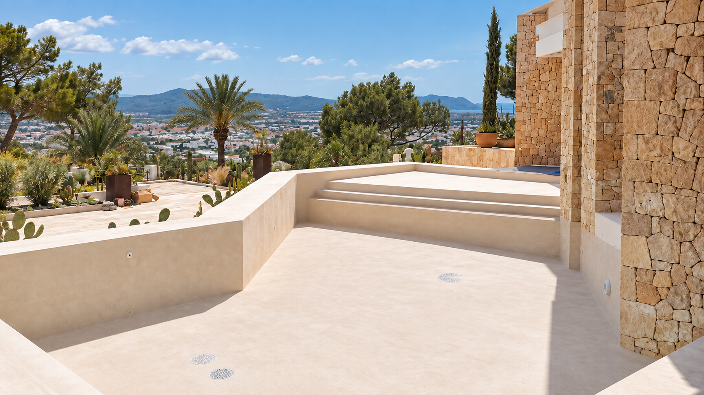
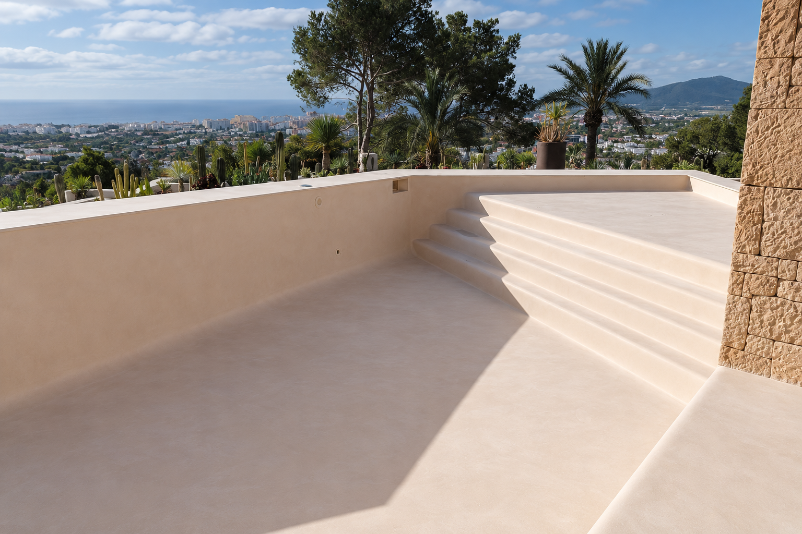
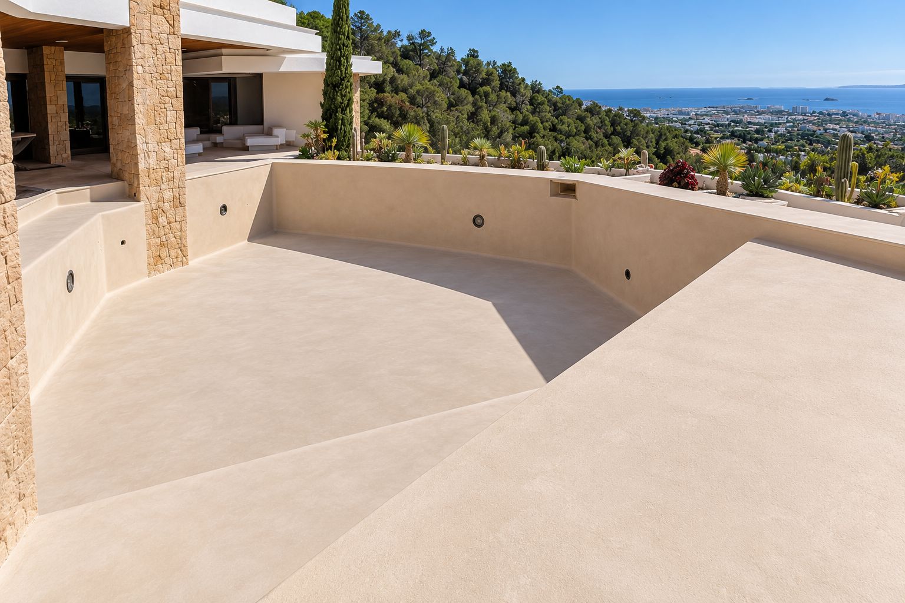
04
BESPOKE PROJECTS
Signature Works
Individuelle Arbeiten und besondere Oberflächen für Räume mit eigenem Charakter.
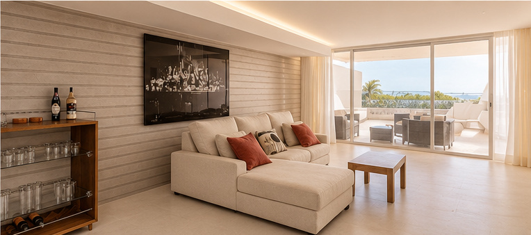
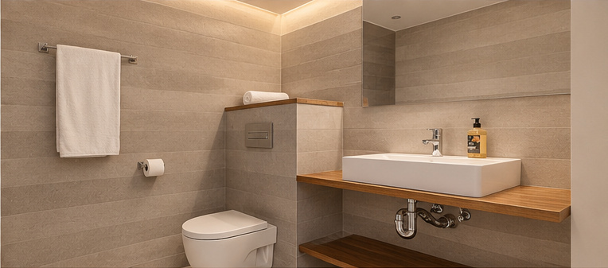
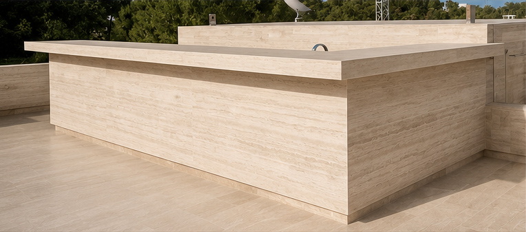
SUMA HOMES · IBIZA
Persönlich geführt.
Präzise umgesetzt.
Ivan Suma verbindet langjährige handwerkliche Erfahrung mit einem klaren Blick für Material, Proportion und Raum. Gemeinsam mit seinem Team begleitet er jedes Projekt persönlich – vom ersten Gespräch bis zur fertigen Oberfläche.
Projekt anfragen →